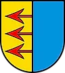

Feuerungskontrolle
Sauber betriebene und sparsame Feuerungen sind essenziell für die Luftqualität. Bei der Kontrolle messen wir Russzahl, Kohlenmonoxid, Stickoxide und Abgasverlust – für ein gesundes Klima und eine tiefe Luftbelastung.
Für wen?
Hauseigentümerinnen und Hauseigentümer
Öl-, Gas- oder Holzheizung? Wir messen im vorgeschriebenen Turnus – meist zusammen mit den Kaminfegerarbeiten, also ohne zusätzlichen Termin.
Bauherrschaften und Heizungsinstallateure
Neue oder sanierte Anlage? Wir führen die Abnahmemessung durch, damit allfällige Mängel noch innerhalb der Garantiefrist behoben werden können.
Gemeinden
Als amtlicher Feuerungskontrolleur übernehmen wir für sieben Gemeinden die Oberaufsicht über alle Feuerungskontrollen und Abnahmemessungen.
Sauber betriebene und sparsame Feuerungen sind essenziell in puncto Luftqualität. Darum ist es wichtig, Feuerungsanlagen regelmässig zu überprüfen. Bei der Kontrolle werden Messungen vorgenommen und Parameter wie Russzahl, Kohlenmonoxid, Stickoxide oder Abgasverlust betrachtet – mit dem Ziel, für ein gesundes Klima und eine tiefe Luftbelastung zu sorgen.
Welcher Turnus gilt?
Feuerungsanlagen bis 1 Megawatt Feuerungswärmeleistung, die mit Heizöl betrieben werden, müssen alle zwei Jahre überprüft werden, gasbetriebene Anlagen alle vier Jahre. Die Kontrolle kleiner Holzfeuerungen bis 70 Kilowatt erfolgt alle zwei Jahre; bei selten benützten Anlagen gilt ein Turnus von vier bis zehn Jahren. Grundsätzlich erfolgt die Holzfeuerungskontrolle gleichzeitig mit den Kaminfegerarbeiten.
Die Breitschmid Kaminfeger AG darf im gesamten Kanton Aargau die Feuerungskontrolle durchführen.
Wann gilt die Meldepflicht?
Der Neubau, die Einrichtung oder die Änderung von Feuerungsanlagen ist meldepflichtig.
Die erste Messung
Die erste lufthygienische Messung oder Kontrolle (Abnahmemessung) wird durch den amtlichen Feuerungskontrolleur der Gemeinde durchgeführt. Sie sollte möglichst innert drei, spätestens innert zwölf Monaten nach Inbetriebnahme der neuen oder sanierten Anlage erfolgen, damit festgestellte Mängel noch in der Garantiefrist behoben werden können.
Amtlicher Feuerungskontrolleur
Von den folgenden Gemeinden sind wir als amtlicher Feuerungskontrolleur gewählt und für die Oberaufsicht aller Feuerungskontrollen und Abnahmemessungen zuständig.
- 5610 Wohlenseit 1981
- 5611 Anglikonseit 1981
- 5619 Büttikonseit 1976

5619 Uezwilseit 1976- 5522 Tägerigseit 1992
- 5606 Dintikonseit 2018
- 5600 Ammerswilseit 2018
Häufige Fragen zur Feuerungskontrolle
Was ist der Unterschied zwischen Kaminfeger und Feuerungskontrolle?
Der Kaminfeger reinigt die Anlage und prüft Sicherheit und Brandschutz. Die Feuerungskontrolle ist eine lufthygienische Messung von Russzahl, Kohlenmonoxid, Stickoxiden und Abgasverlust. Bei uns erhalten Sie beides aus einer Hand.
Wie oft ist die Feuerungskontrolle fällig?
Ölfeuerungen bis 1 Megawatt alle zwei Jahre, Gasanlagen alle vier Jahre, kleine Holzfeuerungen bis 70 Kilowatt alle zwei Jahre. Bei selten benützten Holzfeuerungen gilt ein Turnus von vier bis zehn Jahren.
Muss mein Holzofen seit 2026 gemessen werden?
Der Kanton Aargau setzt seit dem 1. Januar 2026 die Messpflicht für kleine Holzfeuerungen bis 70 Kilowatt um. Ob und wie Ihre Anlage betroffen ist, hängt vom Anlagetyp ab – wir klären das bei der nächsten Kontrolle mit Ihnen.
Was passiert, wenn meine Anlage die Grenzwerte nicht einhält?
Dann muss die Anlage eingestellt oder saniert und erneut gemessen werden. Wir zeigen Ihnen, woran es liegt und was zu tun ist.
Ihre Frage ist nicht dabei? Fragen Sie uns direkt oder rufen Sie an: 056 622 04 27
Weitere Dienstleistungen
Kaminfegerarbeiten
Ihr Profi für Kamin- und Feuerungsanlagen.
Mehr dazuFeuerungskontrolle
Eine lufthygienische Messung oder Kontrolle.
Mehr dazuBrandschutz
Wir begleiten Ihr Vorhaben während der Bauzeit.
Mehr dazuSolarreinigung
Profitieren Sie von einer höheren Energieproduktion.
Mehr dazuEnergieberatung
Unabhängig beraten vor dem Heizungsersatz.
Mehr dazu
Wir haben Ihr Interesse geweckt?
Kontaktieren Sie uns unverbindlich – wir beraten Sie gerne persönlich.